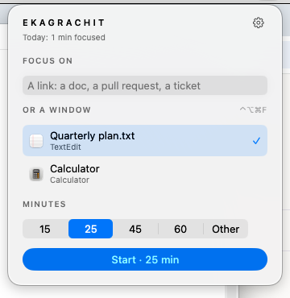
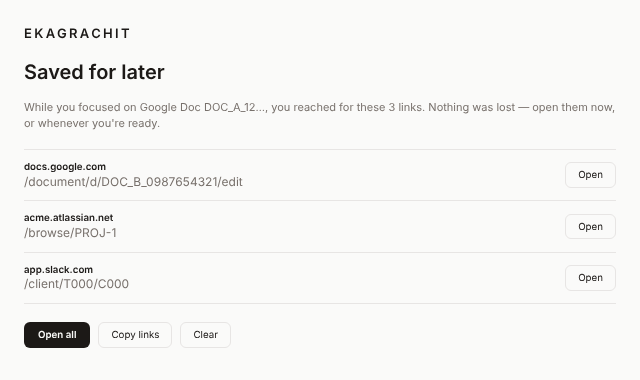
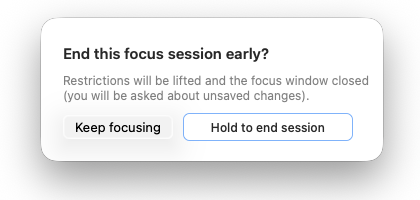
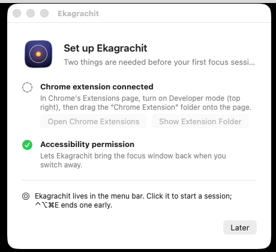

The distraction isn't social media.
You open a design doc to review it. A paragraph reminds you of a Jira ticket. The ticket links a pull request. Slack pings. Twenty minutes later there are five new tabs, three half-finished thoughts, and the review you sat down for still isn't done.
Or you open your editor to fix one bug, and a terminal, a dashboard and a chat thread later, it's lunch.
Blockers don't help: Jira, GitHub and Slack are your job. Ekagrachit doesn't judge websites. It protects the one thing you decided to work on, for as long as you decided to work on it.
एकाग्रचित्त
ekāgra-citta — a mind gathered to one point
Five states of mind
In the Yoga tradition, Vyāsa's commentary on Patañjali's Yoga Sūtras describes five states the mind moves through:
- kṣiptascattered, pulled in every direction
- mūḍhadull, heavy, unclear
- vikṣiptadistracted: steady for a moment, then pulled away
- ekāgraone-pointed: gathered on a single object
- niruddhastill: completely settled
Most knowledge work happens in vikṣipta: a mind that could hold a thought, if the next tab didn't take it. Ekagrachit can't make a mind one-pointed. It removes what keeps pulling it away, so ekāgra has room to happen.
A lamp in a windless place
That lamp is Ekagrachit's mark. The darkened screen is the windless place; your work is the flame.
When you switch away and Ekagrachit brings you back, it isn't punishing a lapse. Wandering is what minds do; returning is the practice, what Patañjali calls abhyāsa (Yoga Sūtra 1.12–1.14).
These ideas come from India's contemplative traditions rooted in the Vedas. Ekagrachit borrows its name from them with respect; it is a tool, not a teacher.
Works with what you work in
Any Mac window can be your one thing. Web pages get even finer control: links away from the page never load.
Mac apps
Word, Excel, PowerPoint, Pages, Numbers, Keynote. VS Code, Cursor, Xcode, IntelliJ. Terminal, iTerm2, Warp, Ghostty. Obsidian, Logic, Final Cut. If it has a window, you can focus on it: open it, press ⌃⌥⌘F.
Web apps, by what you're working on
Google Docs, Sheets and Slides. GitHub and GitLab pull requests. Jira, Linear, Confluence, Notion, Figma, Miro, Overleaf, Colab, and Word, Excel and PowerPoint on the web. Ekagrachit recognises the document itself, so its views, tabs and comments keep working and everything else stays out.
From anywhere
Start from the menu bar, with ⌃⌥⌘F on whatever is in front, or from Shortcuts, Raycast and Alfred with ekagrachit://focus?window=front&minutes=50.
How it works
Choose one thing and a duration
Click ◎ in the menu bar. What you were just working on is already chosen, whether that's the Chrome tab or the window in front. Pick 15, 25, 45 or 60 minutes, or your own. Or skip the menu: ⌃⌥⌘F.

Work. Everything else is gone.
A web page opens in a clean window, signed in as always; an app window stays exactly where it is. Other apps, the Dock and other Spaces are covered, and switching away brings you right back.
Pick up the threads afterwards
Every link you reached for in a focused page was saved, not lost. When the session ends, there they are.

Built to hold, not to nag
Off-target links never load
Navigating away from your document is stopped before the page is even requested. New tabs and windows close. Your document keeps working: editing, comments, everything.
The whole screen, not just a tab
Every display and Space is covered, the Dock and menu bar included. Cmd-Tab, Mission Control and Stage Manager all lead back to your window, and a new window can't take its place.
Saved for later
The Jira ticket, the PR, the doc your doc links to: captured with one click, listed when you're done. Follow the thought later without losing the thread now.
Ending early is deliberate
Press ⌃⌥⌘E (or End… in the pill) and hold for two seconds. Never an accidental click, never a trap.

Robust by design
Survives sleep, browser restarts and app restarts. Time keeps counting while your Mac sleeps, and changing the clock can't extend a session. Ending never closes a page with unsaved changes without asking.
Private
Everything stays on your Mac: no account, no server, no analytics. Ekagrachit never reads your documents or records your browsing. Privacy details.
Install in two minutes
Drag to Applications
Open the downloaded .dmg and drag Ekagrachit into Applications. The first time, macOS asks you to confirm opening it: System Settings → Privacy & Security → Open Anyway.
Follow the setup window
Allow Accessibility so Ekagrachit can bring your window back to the front. To focus on web pages, add the Chrome extension: the setup window opens Chrome's Extensions page and the folder for you.

Questions
Is this a website blocker?
No. There's no blocklist. During a session exactly one resource is allowed — your document (any of its views, tabs and comments), and nothing else. Outside a session your browser behaves normally.
What counts as “the same document”?
Google Docs, Sheets, Slides, Forms and Drive files are recognised by their document ID, so edit/view/comment modes and headings all work. GitHub pull requests and issues include their Files and Commits tabs. Jira issues by key. Notion pages, Figma files, Linear issues, Confluence pages, GitLab merge requests and issues (self-hosted too), Bitbucket pull requests, Miro boards, Overleaf projects, Colab notebooks and Word, Excel and PowerPoint for the web are recognised by their stable ID, so renaming a page or moving between its views never breaks the session. Any other page by its exact address.
What can I do inside a focused app?
Everything, in that window. The window is the unit: tabs inside it (an editor's files, a terminal's tabs) stay usable, and its own sheets and dialogs work. Other windows of the same app, and every other app, stay covered. If the app is relaunched, Ekagrachit finds the window again by its title.
What if I really need to get out?
Press ⌃⌥⌘E and hold the button for two seconds. If anything ever misbehaves, quitting Ekagrachit (⌥⌘⎋, Force Quit) removes the overlay immediately.
Do I need Chrome?
Only for web pages. Focusing a Mac app needs just the app and the Accessibility permission. Everything starts from ◎ in the menu bar; the Chrome extension has no controls of its own. It works inside Chrome for the app, and its toolbar button simply opens Ekagrachit's menu.
Which browsers?
Google Chrome. Chromium, Brave and Edge use the same extension system and are registered automatically, but Chrome is what we test.
Does it silence notifications?
macOS doesn't let apps switch Focus modes directly. In Settings you can name two Shortcuts (Do Not Disturb on/off) that Ekagrachit runs at the start and end of a session.
Why does macOS warn when I first open it?
This build is not yet notarised by Apple. It's open source and built in public CI; you can check the SHA-256 checksums on the release page or build it yourself.